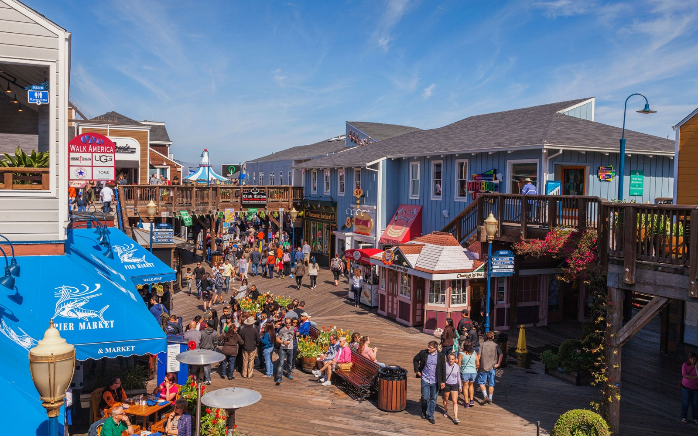
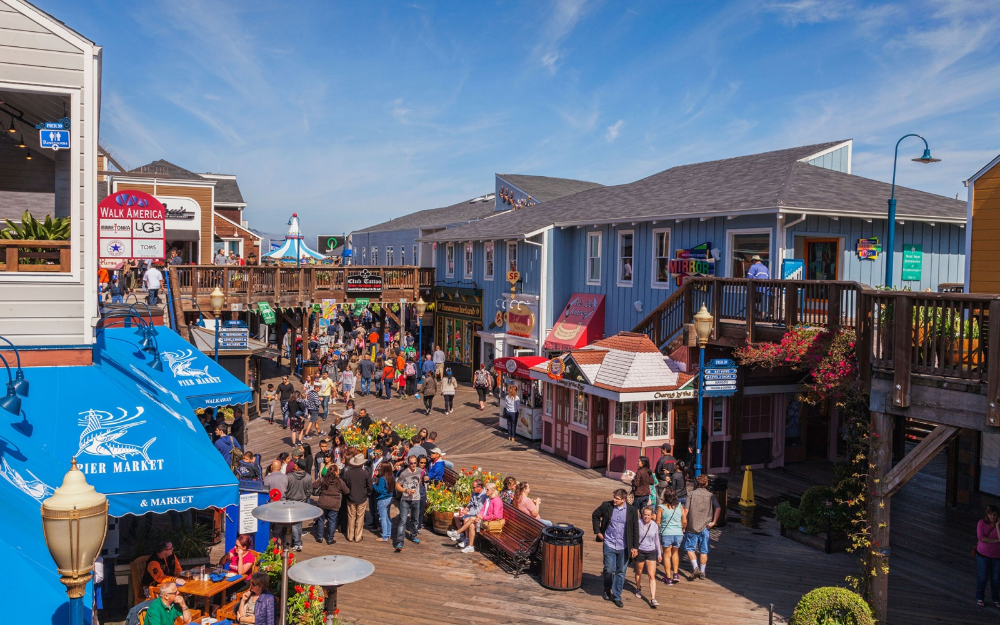
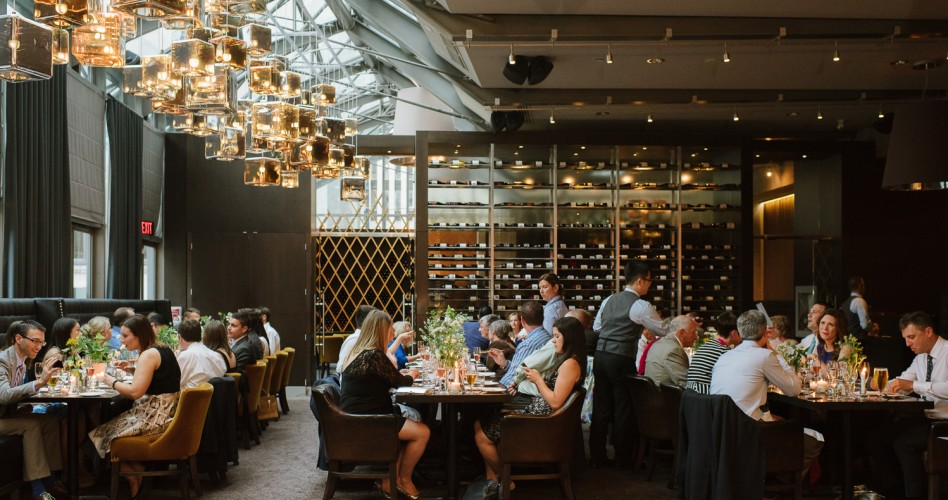

SAN FRANCISCO - NOSSO PONTO DE PARTIDA
Aqui será nosso ponto de partida. San Francisco é uma cidade de contrastes: velho e novo, sofisticado e descontraído, urbano e bucólico. Esta é uma cidade em constante evolução. Adicione atrações emblemáticas, como a Golden Gate Bridge, o Fisherman’s Wharf (Porto do Pescador), a Ilha de Alcatraz e interessantes bairros, tanto individualistas quanto dinâmicos, e San Francisco torna-se cativante, criativa e verdadeiramente única. Nosso ponto de partida será em alto estilo.
 



